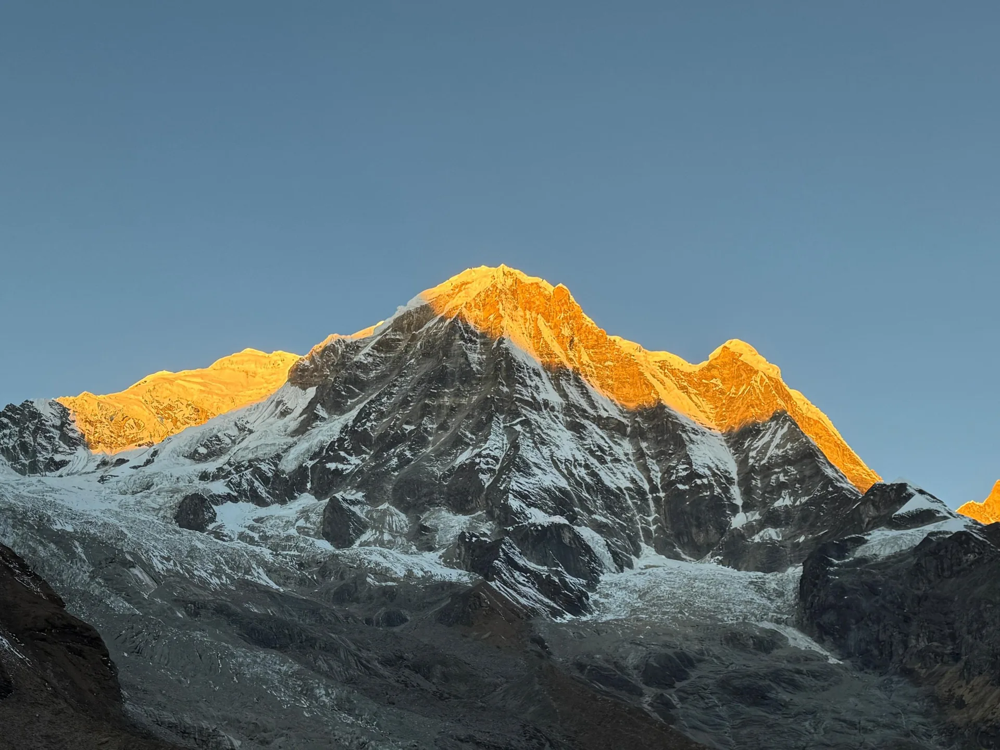
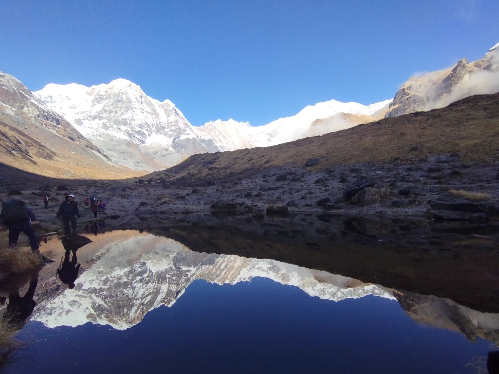
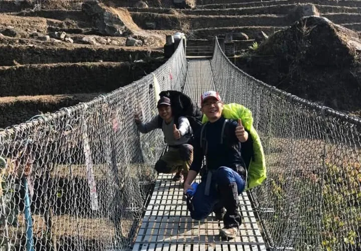

Beyond the Postcards: The Raw Truth of Annapurna Base Camp
The Annapurna Base Camp trek is universally celebrated as Nepal's most accessible high-altitude Himalayan sanctuary trek. At an apex elevation of 4,130 meters (13,550 feet), it carries far lower risk of severe altitude illness than the 5,364-meter Everest Base Camp trek or the 5,416-meter Thorong La pass. Yet, paradoxically, many trekkers who have conquered both routes report that ABC was physically harder on their leg joints and daily endurance.
Why? Because the geography of the Annapurna Sanctuary is not a gradual valley incline—it is a brutal, deeply carved river canyon. The trail incessantly drops hundreds of meters to rushing glacial torrents only to climb straight back up steep canyon walls on stone staircases. Knowing what to expect before you lace up your boots transforms potential misery into a triumphant, well-managed adventure.
The Mental Framing Rule: ABC is not a continuous upward march toward a summit. It is an undulating series of micro-climbs and quad-busting descents. Embracing the rhythm of stone staircases as active meditation rather than an obstacle will save your sanity.
The Infamous 3,000+ Stone Steps: Knee Impact & Muscle Fatigue
Nothing shocks first-time trekkers quite like the infamous Chhomrong Stairs. Perched dramatically on a steep hillside above the Chhomrong Khola, the village of Chhomrong requires descending approximately 2,140 uneven, hand-hewn stone steps down to the suspension bridge at 1,900m—only to immediately ascend roughly 2,500 vertical stone steps back up the opposite cliff face to Upper Sinuwa (2,360m).
And because the classic ABC route is an out-and-back trail through the same river corridor, you must repeat this entire knee-crunching sequence in reverse on your return journey. Over an 8-day trek, your legs absorb the mechanical shock of over 12,000 individual stone steps.
| Trail Sector | Step Count & Character | Quad / Joint Strain | Tactical Advice |
|---|---|---|---|
| Ulleri Staircase (via Poon Hill) | 3,280 steep stone steps straight up | Extreme cardiovascular & calf burn | Lock into a rhythmic slow breathing pace; don't race. |
| Chhomrong Descent to River | ~2,140 descending stone slabs | Severe patellar tendon impact | Lengthen trekking poles; land on midfoot, not locked heels. |
| Chhomrong Khola to Upper Sinuwa | ~2,500 ascending stone steps | High quad & glute exhaustion | Take 30-second standing pauses every 100 vertical steps. |
| Bamboo to Dovan Undulations | Rocky, wet, irregular steps | Moderate joint strain, slip risk | Watch for moss, damp mud, and slick wet timber roots. |

Paper-Thin Plywood Walls, Snorers & Communal Dorm Dynamics
In trekking blogs, teahouses are described as 'rustic and cozy.' In architectural reality, the partition walls separating guest rooms in villages like Bamboo, Dovan, Deurali, and ABC are constructed from 4mm to 6mm untreated plywood or thin particle board. There is zero acoustic insulation.
What does this mean for your sleep? You will hear:
- Every snore, cough, and deep sigh from the rooms to your left, right, and across the corridor.
- Trekkers packing nylon dry bags and zipping velcro at 4:30 AM before sunrise departures.
- Every footstep vibrating along the wooden floorboards when anyone walks down the hallway to use the bathroom.
Furthermore, in the high sanctuary (MBC and ABC), lodge construction is strictly capped by ACAP environmental quotas. There are only four or five lodges at ABC, each with limited private rooms. During peak October and April seasons, solitary trekkers or late arrivals are routinely assigned to communal dining room benches or shared multi-bed dormitory rooms.
Non-Negotiable Packing Essential: Bring high-decibel industrial silicone or foam earplugs and an eye mask. Without them, you will struggle to get deep restorative sleep at high altitude.
The Frozen Taps, Gas Geyser Russian Roulette & Charging Tolls
While low-elevation villages feature reliable solar hot water systems, the situation changes drastically as you enter the Modi Khola canyon above Sinuwa:
- Gas Geyser Russian Roulette: Most upper teahouses utilize wall-mounted LPG gas geysers. These units are notoriously fickle: water flow can fluctuate unpredictably from lukewarm trickle to scalding steam, or cut out entirely mid-shampoo, leaving you standing naked in a drafty, 2°C concrete cubicle.
- The Cold-Shock Trap: Stripping down for a hot shower above Deurali (3,200m) or MBC (3,700m) is one of the most common ways trekkers catch severe respiratory chest colds (the infamous 'Himalayan Khumbu cough'). Experienced guides advise switching completely to antiseptic wet-wipe baths once above Bamboo.
- Escalating Amenity Fees: Every comfort beyond a bare bed and basic meal costs extra on a pay-per-use basis. Expect to pay NPR 300–500 for a hot shower, NPR 200–400 per device to charge from the solar battery bank, and NPR 150–250 per liter of boiled drinking water.

The Steep Gorge Trap: Shaded Cold, Early Sunset & Humidity
The geography of the Modi Khola gorge creates an unusual microclimate that surprises many trekkers. Because the canyon is flanked by the vertical precipices of Hiunchuli (6,441m) on the west and Machapuchare (6,993m) on the east, direct sunlight reaches the trail floor for only 3 to 5 hours per day between Bamboo and Deurali.
By 2:30 PM or 3:00 PM, the sun disappears behind the jagged western ridge, causing temperatures to plummet instantly by 10°C to 15°C. In addition, moisture from the rushing river creates high ambient humidity. Cold plus high humidity produces a bone-chilling dampness that penetrates through light jackets much faster than the dry cold of the Everest region. Washing socks or shirts above Chhomrong is futile—they will freeze solid before drying.
The Choke Point Between Deurali and MBC: Real Avalanche Physics
One of the most serious safety realities that casual trekking itineraries gloss over is the Modi Khola Avalanche Corridor between Himalaya, Deurali, and Machapuchare Base Camp. Unlike open rolling valleys, this sector is a narrow alpine defile surrounded by thousands of meters of vertical fluted rock faces.
During winter (January–February) and early spring (March), heavy snowfalls accumulate on the high hanging cornices of Hiunchuli and Machapuchare. When strong afternoon solar radiation strikes these slopes, snow and ice break loose, funneling down steep couloirs directly across the trekking path.
Tragic avalanche accidents have occurred historically in this exact area when unguided or uninformed hikers pushed through during heavy snow storms or late afternoon heat. In winter and early spring, trekkers must follow the designated winter high-route diversion, start before 7:00 AM, and maintain safe spacing across known hazard chutes.
| Village / Zone | Altitude | WiFi Reliability | Hot Shower Cost | Room Heating | Pipe Freeze Risk |
|---|---|---|---|---|---|
| Chhomrong | 2,170m | 80% (Everest Link / 4G) | NPR 300 (Solar/Gas) | Dining room stove | Very Low |
| Bamboo / Dovan | 2,310m - 2,600m | 40% (Spotty 4G) | NPR 350 - 400 (Gas) | Wood/Kerosene stove | Low (Winter only) |
| Deurali | 3,200m | 20% (Everest Link card) | NPR 400 (Bucket water) | Central dining stove | High (Nov - March) |
| MBC / ABC | 3,700m - 4,130m | 10% - 30% (Weather dep.) | NPR 500 (Bucket hot water) | Dining stove (5-8 PM only) | Severe (Daily freeze) |
Teahouse Nutrition Realities: The Dal Bhat Life-Saver vs Western Food Pitfalls
Teahouse menus along the Annapurna trail are astonishingly extensive: you will see pizza, lasagna, burgers, apple pie, and carbonara listed alongside traditional Nepali food. However, ordering Western comfort food above Sinuwa is almost always a mistake.
At high altitude, cheese, processed meats, and heavy tomato pastes are extremely difficult for sluggish digestive systems to process. Kitchen stoves run on limited kerosene or gas cylinders carried up on porters' backs, meaning pizzas are often underbaked with rubbery yak cheese that sits like a lead brick in your stomach.
The legendary trekking mantra—'24 Hour Dal Bhat Power'—is not a joke; it is nutritional science. Freshly steamed rice provides rapid carbohydrates, spiced yellow lentil soup (dal) delivers bioavailable protein and electrolytes, and curried seasonal vegetables supply essential micronutrients. Best of all, Dal Bhat is cooked fresh twice daily in enormous batches and comes with unlimited free refills until you are completely full.

Squat Toilets, Icy Buckets & Hygiene Tactics Above 3,000m
Let's address the elephant in the room: bathroom facilities. While Pokhara and lower lodges offer Western-style flush toilets, the majority of facilities above Bamboo are traditional Asian porcelain squat toilets set into wet concrete floors.
Above Deurali (3,200m), external water supply lines freeze overnight. The gravity-fed flush cisterns become inoperable. In their place sits a large plastic barrel filled with river water and a plastic ladle. Early in the morning, you must break a layer of floating ice with the ladle to flush the toilet. Toilet paper is never flushed (it will clog rustic septic tanks); it must be deposited into a trash bin.
How to survive with dignity and hygiene:
- Carry your own toilet paper rolls in zip-lock bags (lodges do not supply TP).
- Keep alcohol-based hand sanitizer and biodegradable wet wipes in your jacket pocket where they won't freeze.
- Wear slip-on camp shoes (like insulated down booties or Crocs with socks) so you don't have to lace up heavy trekking boots for midnight bathroom trips.
The Sweaty Ascent to Freezing Descent: The Critical Layering Trap
The physical rhythm of ABC trekking involves intense, sweat-inducing stair climbs under warm valley sunshine, followed immediately by rapid cooling in damp, shaded river canyons. This creates the classic Himalayan hypothermia trap: sweating through your clothing on the way up, and freezing on the way down.
Cotton clothing (t-shirts, cotton socks, cotton underwear) is disastrous on this trek. Cotton absorbs moisture, holds it against your skin, and loses 100% of its thermal insulation value when wet. Once you stop moving to admire a view in the shaded forest, that soaked cotton acts like a refrigerated wet blanket against your torso.
Dress exclusively in 100% merino wool or high-performance synthetic technical fabrics. Strip off outer layers before you start sweating on steep climbs, and put on your windproof fleece or down jacket the moment you stop for a rest.

Digital Detox by Force: WiFi Scams, NTC vs Ncell Reality
Many travelers arrive expecting 4G mobile data roaming or high-speed teahouse WiFi to upload social media stories daily. Prepare for a forced digital detox:
- Cellular Network Coverage: NTC (Nepal Telecom) offers superior coverage in the Annapurna Sanctuary compared to Ncell. You will have decent 4G up to Chhomrong and Sinuwa. Beyond Bamboo, signals become erratic; from Deurali to ABC, both networks are frequently dead zones.
- Everest Link / AirJaldi WiFi Cards: Some teahouses sell prepaid WiFi vouchers (NPR 500–700 for 24 hours). However, these networks rely on line-of-sight microwave relays perched on high ridges. If thick cloud cover, heavy snow, or wind knocks out the repeater station, the WiFi cuts out completely—and vouchers are non-refundable.
- Embrace the Blackout: Treat the lack of connectivity as a gift. Instead of staring at screens, spend evenings conversing with travelers from across the globe, playing card games, reading, or watching the moonlight illuminate the icy face of Machapuchare.
The Return Descent: Why Going Down Hurts More Than Going Up
Most trekkers expend 90% of their mental anxiety worrying about the ascent to 4,130m. Yet physical therapists and guides know that the descent accounts for over 80% of trail injuries and chronic soreness.
When descending 2,000 vertical meters over two days from ABC back to Chhomrong and Jhinu Danda, every single downward step exerts eccentric muscle contractions on your quadriceps and transmits shock loads equal to three to four times your body weight through your knee joints (patellofemoral joint) and ankles.
By day 6 or 7, hikers who did not use trekking poles suffer from 'Jelly Legs'—trembling quads, inflamed patellar tendons, and blackened toenails caused by feet sliding forward against the front of boots on continuous downhill steps.
Downhill Survival Tip: Clip your toenails short before the trek. Lace your boots firmly around the ankle and instep to lock your heel in the rear cup. Use two trekking poles set slightly longer than your waist height to absorb 25% of downward impact with your arms and shoulders.
The Psychological Journey: Overcoming Valley Fatigue & High Basin Euphoria
Trekking ABC is 50% physical fitness and 50% psychological fortitude. On Days 2 and 3, when your legs are aching from the Chhomrong steps and you are walking through dense, damp bamboo forests where mountain vistas are temporarily hidden, 'valley claustrophobia' can set in. You may question why you paid to walk uphill in the cold.
Then, on Day 4, the valley opens past Deurali. The towering south face of Machapuchare appears like a sculpted diamond against the cobalt sky. On Day 5, stepping into the Annapurna Sanctuary at dawn as the first golden sunbeams ignite the colossal 8,091-meter face of Annapurna I, an overwhelming wave of euphoria washes over every trekker. The stairs, the frozen toilets, the snoring neighbors, and the muscle aches instantly dissolve into sheer wonder.
The 10 Commandments of an Unbeatable ABC Trek
To ensure your Annapurna Base Camp trek is an unmitigated triumph, live by these ten golden rules tested over thousands of trail miles:
- Train on Real Stairs: Gym treadmills don't prepare you for ABC. Spend six weeks climbing stadium stairs, high-rise stairwells, or hilly outdoor tracks wearing a weighted backpack.
- Invest in Two Quality Trekking Poles: Learn to use pole wrist straps correctly so your upper body absorbs downward shock.
- Eat Dal Bhat Every Day: It is clean, hot, nutritious, and free to replenish. Save pizza for Pokhara.
- Never Skip Acclimatization Pacing: Spend an overnight at Deurali (3,200m) or MBC (3,700m) before pushing to ABC. Don't rush.
- Pack Industrial Earplugs: They are your single most important mental health asset in paper-thin teahouses.
- Carry High-Capacity Power Banks: Keep them inside your sleeping bag at night so sub-zero cold doesn't drain their charge.
- Bring Cash in Small Bills: Lodges cannot break NPR 1,000 notes for a single cup of tea or a battery charge.
- Keep Toenails Short: Protect your toes from bruising against boot fronts during steep descents.
- Drink 4 Liters of Warm Fluids Daily: Dehydration mimics altitude sickness and thickens blood in cold air.
- Trek With a Certified Local Agency: A licensed guide ensures your safety in avalanche corridors, secures the best rooms, and enriches your journey with authentic local culture.


Ready to Experience the Himalayas?
Whether you are preparing for high-altitude trekking, cultural circuits, or alpine summit expeditions, start planning a bespoke journey tailored to your fitness, travel season, and style.